전자기사 (2005-05-29 기출문제)
1과목: 전기자기학
1. 미분방정식의 형태로 나타낸 멕스웰의 전자계 기초 방정식에 해당되는 것은?
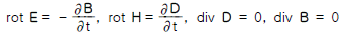
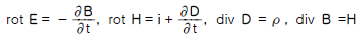
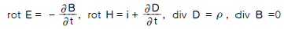
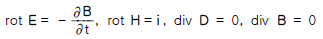
(정답률: 알수없음)

2. 라디오 방송의 평면파 주파수를 710kHz라 할 때 이 평면파가 콘크리트 벽(εs = 5, μs=1)속을 지날 때, 전파속도는 몇 m/s 인가?
- 1.34×108
- 2.54×108
- 4.38×108
- 4.86×108
(정답률: 알수없음)
3. 평면 도체로부터 수직거리 a[m]인 곳에 점전하 Q[C]이 있다. Q 와 평면도체사이에 작용하는 힘은 몇 N 인가? (단, 평면 도체 오른편을 유전율 ε의 공간이라 한다.)
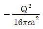
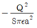
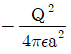
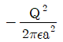
(정답률: 알수없음)
4. 강자성체의 자속밀도 B 의 크기와 자화의 세기 J의 크기 사이에는 어떤 관계가 있는가?
- J는 B 와 같다.
- J는 B 보다 약간 작다.
- J는 B 보다 약간 크다.
- J는 B 보다 대단히 크다.
(정답률: 알수없음)
5. 진공의 전하분포 공간내에서 전위가 V = x2 + y2 [V]로 표시될 때, 전하밀도는 몇 C/m3 인가?
- -4εo
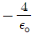
- - 2εo
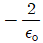
(정답률: 알수없음)
6. 그림과 같이 단면적 S[m2], 평균 자로의 길이 ℓ[m], 투자율 μ[H/m]인 철심에 N1, N2 의 권선을 감은 무단 솔레노이드가 있다. 누설자속을 무시할 때 권선의 상호 인덕턴스는 몇 H 가 되는가?
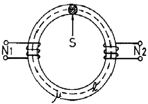
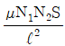
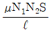
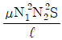
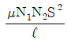
(정답률: 알수없음)
7. 자계 중에 이것과 직각으로 놓인 도체에 I[A]의 전류를 흘릴 때 f[N]의 힘이 작용하였다. 이 도체를 v[m/s]의 속도로 자계와 직각으로 운동시킬 때의 기전력 e[V]는?
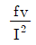
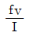
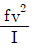
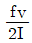
(정답률: 알수없음)
8. 임의의 단면을 가진 2 개의 원주상의 무한히 긴 평행도체가 있다. 지금 도체의 도전률을 무한대라고 하면 C, L, ε및 μ사이의 관계는? (단, C는 두 도체간의 단위길이당 정전용량, L은 두 도체를 한개의 왕복회로로 한 경우의 단위길이당 자기인덕턴스, ε은 두 도체사이에 있는 매질의 유전률, μ는 두 도체사이에 있는 매질의 투자율이다.)
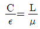
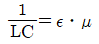
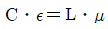
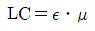
(정답률: 알수없음)
9. 그림과 같이 한변의 길이가 ℓ[m]인 정6각형 회로에 전류 I[A]가 흐르고 있을 때 중심 자계의 세기는 몇 A/m 인가?
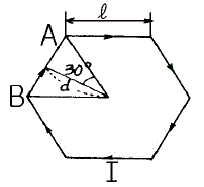
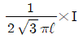
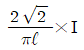
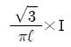
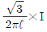
(정답률: 알수없음)
10. 주파수의 증가에 대하여 가장 급속히 증가하는 것은?
- 표피효과의 두께의 역수
- 히스테리시스 손실
- 교번자속에 의한 기전력
- 와전류 손실
(정답률: 알수없음)
11. 비유전율 εs = 5 인 등방 유전체의 한 점에서 전계의 세기가 E = 104 V/m일 때 이 점의 분극률 xe 는 몇 F/m 인가?
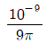
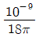
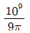
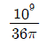
(정답률: 알수없음)
12. 반지름 a[m], 중심간 거리 d[m]인 두 개의 무한장 왕복선로에 서로 반대 방향으로 전류 Ｉ[A] 가 흐를 때, 한 도체에서 x[m] 거리인 A 점의 자계의 세기는 몇 AT/m 인가? (단, d ≫ a, x ≫ a 라고 한다.)
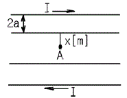
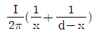
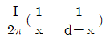
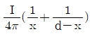
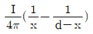
(정답률: 알수없음)
13. 전하밀도 ps[C/m2]인 무한 판상 전하분포에 의한 임의점의 전장에 대하여 틀린 것은?
- 전장은 판에 수직방향으로만 존재한다.
- 전장의 세기는 전하밀도 ps 에 비례한다.
- 전장의 세기는 거리 r 에 반비례한다.
- 전장의 세기는 매질에 따라 변한다.
(정답률: 알수없음)
14. 자화된 철의 온도를 높일 때 자화가 서서히 감소하다가 급격히 강자성이 상자성으로 변하면서 강자성을 잃어버리는 온도는?
- 켈빈(Kelvin)온도
- 연화(Transition)온도
- 전이온도
- 큐리(Curie)온도
(정답률: 알수없음)
15. 그림과 같이 반지름 a[m]인 원형 도선에 전하가 선밀도 λ [C/m]로 균일하게 분포되어 있다. 그 중심에 수직한 z 축상의 한점 P 의 전계의 세기는 몇 V/m 인가?
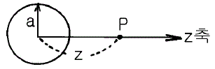
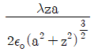
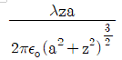
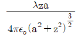
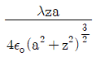
(정답률: 알수없음)
16. 다음 설명 중 틀린 것은?
- 전기력선의 방정식은 "전기력선의 접선방향이 전계의 방향이다."에서 유래된 것이다.
- "전기력선은 스스로 루프(loop)를 만들 수 없다."라함은 전계의 세기의 유일성을 나타내는 것이다.
- 구좌표로 표시한 전기력선의 방정식은
 로 표시된다.
로 표시된다. - 진공 중에서 1[C]의 점전하로부터 발산되어 나오는 전기력선의 수는 약 1.13×1011 개 이다.
(정답률: 알수없음)
17. 공극(air gap)이 δ[m]인 강자성체로 된 환상 영구자석에서 성립하는 식은? (단, ℓ[m]는 영구자석의 길이이며 ℓ ≫ δ이고, 자속 밀도와 자계의 세기를 각각 B[Wb/m2], H[AT/m]라 한다.)
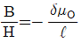
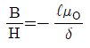
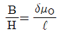
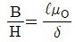
(정답률: 알수없음)
18. 면적이 S[m2]이고 극간의 거리가 d[m]인 평행판콘덴서에 비유전률 εs 의 유전체를 채울 때 정전용량은 몇 F 인가?
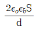
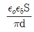
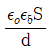
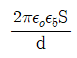
(정답률: 알수없음)
19. 변위전류와 관계가 가장 깊은 것은?
- 반도체
- 유전체
- 자성체
- 도체
(정답률: 알수없음)
20. 그림과 같이 전류가 흐르는 반원형 도선이 평면 z = 0 상에 놓여 있다. 이 도선이 자속밀도 B = 0.8 a x - 0.7 a y + a z [Wb/m2] 인 균일 자계내에 놓여 있을 때 도선의 직선부분에 작용하는 힘은 몇 N 인가?
- 4 a x + 3.2 a z
- 4 ax - 3.2 a z
- 5 a x - 3.5 a z
- - 5 ax + 3.5 a z
(정답률: 알수없음)
2과목: 회로이론
21. 회로망에서 ①전압원 ②전류원 ③마디 ④인덕터 ⑤루프 ⑥캐패시터에 대한 쌍대가 되는 형태는?
- ① - ③, ② - ⑤, ④ - ⑥
- ① - ②, ③ - ⑥, ④ - ⑤
- ① - ②, ③ - ⑤, ④ - ⑥
- ① - ③, ④ - ⑤, ② - ⑥
(정답률: 알수없음)
22. R-L-C 직렬회로에서 자유 진동 주파수는?
(정답률: 알수없음)
23. h 파라미터 중 단락 순방향 전류 이득은?
- h11
- h21
- h12
- h22
(정답률: 알수없음)
24. 두함수 f1(t)=1, f2(t)=e -t 일 때 합성 적분치는?
- e -t
- 1 - et
- 1 - e-t
(정답률: 알수없음)
25. R-L-C 직렬 회로에 t＝0 인 순간, 직류 전압을 인가한다면 2계 선형 미분 방정식은?
(정답률: 알수없음)
26. S 평면 상에서 전달함수의 극점(pole)이 그림과 같은 위치에 있으면 이 회로망의 상태는?
- 발진하지 않는다.
- 점점 더 크게 발진한다.
- 지속 발진한다.
- 감쇄 진동한다.
(정답률: 알수없음)
27. 다음 설명 중 옳은 것은?
- 루프 해석법과 절점 해석법은 망로 해석법과는 달리 비평면 회로에 대해서도 적용될 수 있다.
- 루프 해석법과 망로 해석법은 절점 해석법과는 달리 비평면 회로에 대해서만 적용할 수 있다.
- 루프 해석법과 망로 해석법 및 절점 해석법 모두 비평면 회로에 대해서도 적용될 수 있다.
- 루프 해석법과 절점 해석법은 망로 해석법과는 달리 평면 회로에 대해서만 적용될 수 있다.
(정답률: 알수없음)
28. 두 코일간의 유도 결합의 정도를 나타내는 결합계수 K에 대한 설명으로 옳지 않은 것은?
- K=1은 상호자속이 전혀 없는 경우이다.
- K=0은 유도결합이 전혀 없는 경우이다.
- K=1은 누설자속이 전혀 없는 경우이다.
- 결합계수 K는 0과 1사이의 값을 갖는다.
(정답률: 알수없음)
29. 다음 4단자 정수의 표현이 옳지 않은 것은?
(정답률: 알수없음)
30. RL 직렬회로에 일정한 정현파 전압을 인가하였다. 이 때 인덕터의 양단 전압을 측정하였을 경우에 나타나는 현상은?
- 신호원의 전압과 위상이 동일한 형태로 나타난다.
- 저항양단 전압보다 90°만큼 앞선 위상이 나타난다.
- 인덕터 전류와의 위상이 동일한 형태로 나타난다.
- 신호원 전압보다 90°만큼 앞선 위상이 나타난다.
(정답률: 알수없음)
31. 정현 대칭에서는 어떤 함수식이 성립하는가?
- f(t)=f(t)
- f(t)=-f(t)
- f(t)=f(-t)
- f(t)=-f(-t)
(정답률: 알수없음)
32. 그림에서 Vab를 구하면 몇 [V]인가?
- 2.5
- -2.5
- 5
- -5
(정답률: 알수없음)
33. 이상적인 변압기의 권수비(ratio of turns) n을 표현한 것으로 옳지 않은 것은?
(정답률: 알수없음)
34. 이상적인 평형 3상 ⊿ 전원에서 옳은 내용은?
- 선간 전압의 크기 = 상전압의 크기
- 상전류의 크기 = √3×선간 전류의 크기
- 상전류의 크기 = 선간 전류의 크기
- 선간 전압의 크기 = √3×상전압의 크기
(정답률: 알수없음)
35. 그림과 같은 회로에서 RL에 흐르는 전류는?
- 1A
- 3A
- 4A
- 7A
(정답률: 알수없음)
36. 주파수 선택 특성을 높일 수 있는 방법으로 옳은 것은?
- 내부 임피던스가 큰 전원에는 병렬 공진 회로를 사용한다.
- 내부 임피던스가 큰 전원에는 직렬 공진 회로를 사용한다.
- 내부 임피던스에 관계없이 직렬 공진 회로를 사용한다.
- 내부 임피던스에 관계없이 병렬 공진 회로를 사용한다.
(정답률: 알수없음)
37. 저항 1개와 커패시터 1개를 직렬 연결하여 R-C의 직렬 회로를 구성하고, 일정한 정현파 전압을 인가하였다. 이 때 커패시터의 양단에서 전압 위상과 저항에서 흐르는 전류의 위상을 비교하였을 때의 위상차는?
- 45°
- 90°
- 135°
- 180°
(정답률: 알수없음)
38. 그림의 회로망에서 Z21=V2(S)/I1(S) 는?
- R/(1+CRS)
- CR/(1+CRS)
- 1/(1+CRS)
- C/(1+RS)
(정답률: 알수없음)
39. 다음 회로망의 합성 저항은?
- 6[Ω]
- 12[Ω]
- 30[Ω]
- 50[Ω]
(정답률: 알수없음)
40. 시정수 τ를 갖는 R-L 직렬 회로에 직류 전압을 가할 때 t=3τ가 되는 시간의 회로에 흐르는 전류는 최종치의 몇 %가 되는가?
- 63.2%
- 86.5%
- 95.0%
- 98.2%
(정답률: 알수없음)
3과목: 전자회로
41. 트랜지스터 컬렉터 누설 전류가 주위 온도 변화로 1.6[㎂] 에서 160[㎂]로 증가되었을 때 컬렉터 전류의 변화가 1[㎃]라 하면 안정률은 약 얼마인가?
- 1
- 6.3
- 16
- 10π
(정답률: 알수없음)
42. 그림의 회로는 무슨 궤환인가?
- 전류직렬
- 전류병렬
- 전압직렬
- 전압병렬
(정답률: 알수없음)
43. QAM(Quadrature Amplitude Modulation) 변조 방식을 가장 옳게 설명한 것은?
- QAM 변조 방식은 AM 방식과 FSK 방식을 혼합한 것이다.
- QAM 변조 방식은 PSK 방식의 일종이다.
- QAM 변조 방식은 AM 방식과 PSK 방식을 혼합한 것이다.
- QAM 변조 방식은 진폭 변조와 주파수 변조 방식을 혼합한 것이다.
(정답률: 알수없음)
44. α 차단 주파수에 관한 사항으로 옳지 않은 것은?
- α가 원래값의 0.7배가 되는 곳의 주파수이다.
- Base 주행 시간에 반비례한다.
- Base 폭의 자승에 반비례한다.
- 확산 정수에 반비례한다.
(정답률: 알수없음)
45. 시미트 트리거(schmitt trigger) 회로의 설명 중 옳은 것은?
- 입력 파형에 관계없이 출력은 삼각파이다.
- 입력 전류의 크기로 회로의 on, off를 결정해 준다.
- A/D 변환기는 시미트 트리거 회로의 응용회로 중의 하나이다.
- 2개의 증폭기의 접지 단자를 공통으로 접속하고, 음 귀환을 걸어 입력 신호의 진폭에 따라 2가지 안정된 상태를 이룬다.
(정답률: 알수없음)
46. 그림과 같은 B급 푸시풀 증폭기에서 최대 출력 신호전력은? (단, 입력 신호는 정현파이다.)
(정답률: 알수없음)
47. 그림과 같은 발진 회로가 지속 발전을 하기 위해서는 트랜지스터의 전류증폭률 hfe는 어떤 조건이어야 하는가?
- hfe≧ω2LC2
- hfe≧ω2L2C2
- hfe≦ω2L2C2
- hfe≦ω2LC2
(정답률: 알수없음)
48. 커패시터로 필터를 구성한 전파 정류기에서 부하 저항이 감소하면 리플(ripple) 전압은?
- 감소한다.
- 증가한다.
- 관계없다.
- 주파수가 변화한다.
(정답률: 알수없음)
49. 그림의 연산 증폭기 회로는?
- 전압증폭기
- 전류증폭기
- 정전압 회로
- 정전류 회로
(정답률: 알수없음)
50. 저주파 증폭기의 직류 입력은 2[kV], 400[mA]이고 효율은 80[%]로 보면 부하에서 나타나는 전력은?
- 640[W]
- 600[W]
- 480[W]
- 320[W]
(정답률: 알수없음)
51. 그림과 같은 트랜지스터 회로에서 IB와 IC 는? (단, 트랜지스터는 활성영역에서 동작 중이고 VBE = 0.65V 이다.)
- IB = 0.273㎃, IC = 27.3㎃
- IB = 0.0217㎃, lC = 2.17㎃
- IB = 0.2601㎃, IC = 26.01㎃
- IB = 0.0268㎃, IC = 2.68㎃
(정답률: 알수없음)
52. 교류 전압에 직류 레벨을 더하는 회로는?
- 클리퍼
- 클램퍼
- 리미터
- 필터
(정답률: 알수없음)
53. 증폭 회로의 고주파 응답을 결정하는 요소는?
- 이득-대역폭적
- 롤-오프(Roll-Off)
- 바이패스 커패시턴스
- 트랜지스터의 내부 커패시턴스
(정답률: 알수없음)
54. 0 바이어스(zero bias)로 된 B급 푸시풀 증폭기에서 일어나기 쉬운 중력 파형의 일그러짐 현상을 무엇이라고 하는 가?
- 주파수 일그러짐
- 진폭 일그러짐
- 교차 일그러짐
- 위상 일그러짐
(정답률: 알수없음)
55. PSK(phase-shift keying) 방식의 변ㆍ복조기를 구성하는 회로는?
- PLL 회로
- 평형 변조 회로
- 선형 가산 회로
- 시프트 레지스터 회로
(정답률: 알수없음)
56. 수정발진자의 직렬 공진주파수를 fs, 병렬 공진주파수를 fp라고 할 때, 안정된 발진을 지속할 수 있는 발진주파수 fo의 범위는?
- fo＜fs
- fs＜fo＜fp
- fp＜fo＜fs
- fo＞fp
(정답률: 알수없음)
57. 그림과 같은 연산 증폭기에서 입력 바이어스 전류란?
- v0 = 0 일 때 ( IB1 + IB2 ) / 2
- v0 = ∞ 일 때 ( IB1 + IB2 ) / 2
- v0 = 0 일 때 ( IB1 + IB2 )
- v0 = ∞ 일 때 ( IB1 + IB2 )
(정답률: 알수없음)
58. 그림과 같은 전력증폭기의 최대 효율은 약 얼마인가?
- 12.5%
- 25%
- 50%
- 78.5%
(정답률: 알수없음)
59. 수정발진자의 등가용량은Co,고유주파수는fs 이며,발진자의 극간의 정전용량은C , 정전용량을 고려한 주파수를 fP라 할 때, 다음 관계식 중 옳은 것은?
(정답률: 알수없음)
60. 부궤환 증폭기에 관한 설명으로 옳은 것은?
- 궤환 증폭기의 이득은 A/(1-βA)이다.
- 비직선 왜곡은 감소하나 잡음은 증가한다.
- 대역폭의 상한 주파수와 하한 주파수가 증가한다.
- 궤환 회로에 따라 입 Χ출력 임피던스의 값이 증가하거나 감소한다.
(정답률: 알수없음)
4과목: 물리전자공학
61. 1[coulomb]의 전하를 얻을려면 전자는 몇 개가 필요한가? (단, e=1.602⒡10-19[C])
- 6.24⒡1016[개]
- 6.24⒡1018[개]
- 6.24⒡1020[개]
- 6.24⒡1022[개]
(정답률: 알수없음)
62. 파울리(Pauli)의 배타 원리가 적용되는 통계 방식의 종류는?
- Maxwell-Boltzmann 통계
- Bose-Einstein 통계
- Fermi-Dirac 통계
- Gausian 통계
(정답률: 알수없음)
63. Bragg의 반사 조건을 나타내는 식은?
- 2dcosθ=nλ
- 2dsinθ=nλ
(정답률: 알수없음)
64. 인공위성 등에 사용되는 태양전지는 반도체의 무슨 현상을 이용한 것인가?
- 광도전 효과
- 광기전력 효과
- 광전자 방출 효과
- 루미네센스 효과
(정답률: 알수없음)
65. PN 접합시 순방향으로 바이어스 되었을 때의 설명 중 옳은 것은?
- 다수 캐리어가 서로 다른 쪽에 주입된다.
- P형 쪽 전자만이 N형 영역으로 들어간다.
- P형 영역의 정공만이 N형 쪽으로 주입된다.
- 어떤 전류도 흐르지 않는다.
(정답률: 알수없음)
66. 에너지 준위도에서 0 준위는?
- 페르미 준위
- 이탈 준위
- 금속내 준위
- 금속외 준위
(정답률: 알수없음)
67. FET를 단극성 소자라고 하는 이유는?
- 게이트가 대칭인 구조이기 때문이다.
- 전자만으로써 전류가 운반되기 때문이다.
- 소스와 드레인 단자가 같은 성질이기 때문이다.
- 다수 캐리어만으로써 전류가 운반되기 때문이다.
(정답률: 알수없음)
68. 컬렉터 접합부의 온도 상승으로 트랜지스터가 파괴되는 현상은?
- Saturation 현상
- break down 현상
- thermal runaway 현상
- pinch off 현상
(정답률: 알수없음)
69. 반도체에서의 확산전류 밀도 J 는? (단, n 은 캐리어의 농도, q 는 캐리어의 전하, D 는 확산 정수, x 는 거리이며, 1차원적인 구조의 경우를 생각한다.)
(정답률: 알수없음)
70. 열전자 방출용 재료로 적합하지 않은 것은?
- 일함수가 큰 것
- 융점이 높은 것
- 방출 효율이 좋은 것
- 가공, 공작이 용이한 것
(정답률: 알수없음)
71. 진성반도체 Si의 300[K]에서의 저항율을 636[Ω·m], 전자 및 정공의 이동도를 각각 0.15[m2/VΧsec], 0.⑤[m2/VΧsec]이라고 하면 그때의 전자 밀도는 약 얼마인가?
- 9.8⒡1010개/m3
- 9.8⒡1012개/m3
- 4.9⒡1013개/m3
- 4.9⒡1016개/m3
(정답률: 알수없음)
72. Fermi 에너지에 대한 설명으로 옳지 않은 것은?
- 온도에 따라 그 크기가 변한다.
- 캐리어 농도에 따라 그 크기가 변한다.
- 상온에서 전자가 점유할 수 있는 최저 에너지이다.
- 0° K에서 전자가 점유할 수 있는 최고 에너지이다.
(정답률: 알수없음)
73. 바랙터(varactor) 다이오드는 어떠한 양(量)들 사이의 비직선적 관계를 이용하는 소자인가?
- 전류와 전압
- 전류와 온도
- 전압과 정전용량
- 주파수와 정전용량
(정답률: 알수없음)
74. 고주파 특성이 좋은 트랜지스터를 만들기 위한 조건 중 옳지 않은 것은?
- 차단 주파수를 높게 한다.
- 베이스 확산 저항을 작게 한다.
- 켈렉터 접합 면적을 작게 한다.
- 확산하는 소수 캐리어의 확산 정수를 작게 한다.
(정답률: 알수없음)
75. Fermi-Dirac 분포 함수는?
- f(E)=1-e (E-EF)/kT
- f(E)=1+e (E-EF)/kT
(정답률: 알수없음)
76. 반도체에서 아인시타인(Einstein)의 관계식은 확산 계수와 무엇과의 관계를 나타내는 것인가?
- 이동도
- 유효 질량
- 캐리어 농도
- 내부 전압
(정답률: 알수없음)
77. 서미스터(thermistor)의 재료가 될 수 없는 것은?
- 철의 산화물
- 망간의 산화물
- 니켈의 산화물
- 은의 산화물
(정답률: 알수없음)
78. 열음극을 갖는 것은?
- 계전기 방전관
- 네온관
- 정전압 방전관
- 수은 정류관
(정답률: 알수없음)
79. 길이 10㎜, 이동도 0.16[m2/Vㆍsec]인 N형 Si의 양단에 전압 10[V]을 가했을 때 전자의 속도는?
- 160[m/sec]
- 180[m/sec]
- 16[m/sec]
- 18[m/sec]
(정답률: 알수없음)
80. 피에조 저항(piezo resistance)은?
- 압력 변화에 의한 저항의 변화이다.
- 자계 변화에 의한 저항의 변화이다.
- 온도 변화에 의한 저항의 변화이다.
- 광전류 변화에 의한 저항의 변화이다.
(정답률: 알수없음)
5과목: 전자계산기일반
81. 프로세서를 경유하지 않고 데이터를 직접 메모리와 입Χ출력하는 방식은?
- Strobe 방식
- Flag 검사 방식
- DMA 방식
- Hand-Shaking 방식
(정답률: 알수없음)
82. DRAM에 대한 설명 중 가장 거리가 먼 것은?
- 플립플롭의 조합으로 구성되었다.
- 회생(refresh) 회로가 필요하다.
- SRAM에 비해 회로가 대단히 간단하다.
- SRAM에 비해 가격이 저렴하고, 전력 소모가 적다.
(정답률: 알수없음)
83. 시스템 소프트웨어에 대한 설명으로 가장 올바른 것은?
- 라이브러리 프로그램은 응용 프로그래머에게 표준 루틴을 제공한다.
- 언어 프로세서는 기계언어를 사용자 편의로 된 언어로 번역한다.
- 진단 프로그램은 컴퓨터의 고장을 고쳐준다.
- 로더 프로그램은 주기억장치의 내용을 보조 기억장치로 보낸다.
(정답률: 알수없음)
84. 수치 데이터의 입 Χ출력이 많은 경우 수치 데이터를 2진수로 변환하지 않고 10진 상태로 나타내는 형식을 무엇이라 하는가?
- 팩(pack)10진 데이터 형식
- 부동 소수점 데이터 형식
- 고정소수점 데이터 형식
- 2진 데이터 형식
(정답률: 알수없음)
85. 주소 지정 방식을 자료에 접근하는 방법에 따라 접근할 때 이에 속하지 않는 것은?
- 직접 주소 (direct addressing)
- 즉각 주소 (immediate addressing)
- 간접 주소 (indirect addressing)
- 상대 주소 (relative addressing)
(정답률: 알수없음)
86. 마이크로프로세서의 특징으로 가장 거리가 먼 것은?
- 마이크로프로세서를 사용한 제품은 저렴해진다.
- 마이크로프로세서를 사용한 제품은 기능 변경이나 확장이 용이하다.
- 마이크로프로세서를 사용하여 제품을 만들려면 소형화되고, 경량화 된다.
- 마이크로프로세서를 사용한 제품은 회로가 대단히 복잡하므로 고장 발생시 보수가 대단히 어렵다.
(정답률: 알수없음)
87. ALU에서 처리된 결과를 일시 저장하는 레지스터는 어떤 것인가?
- 상태레지스터
- 명령레지스터
- 누산기
- 범용레지스터
(정답률: 알수없음)
88. 가상 기억체제에서 주소 공간이 1024K 이고, 기억 공간은 64K라고 가정할 때, 주기억장치의 주소 레지스터는 몇 비트로 구성되는가?
- 10
- 12
- 14
- 16
(정답률: 알수없음)
89. 레지스터(Register)의 설명 중 옳지 않은 것은?
- 누산기(accumulator)도 레지스터의 일종이다.
- CPU 내부에 있으며, 자료를 기억하는 기능을 가지고 있다.
- 레지스터 상호 간에 자료의 전달은 버스를 이용한다.
- 레지스터의 수가 많으면 컴퓨터의 효율이 떨어진다. 국가기술자격검정필기시험문제
(정답률: 알수없음)
90. 주 기억장치에서 캐시 메모리로 데이터를 전송하는 매핑 방법이 아닌 것은?
- 어소시어티브 매핑(Associative Mapping)
- 직접 매핑(Direct Mapping)
- 간접 매핑(Indirect Mapping)
- 세트-어소시어티브 매핑(Set-Associative Mapping)
(정답률: 알수없음)
91. 가상 메모리(virtual memory)에 대한 설명 중 옳지 않은 것은?
- 컴퓨터시스템의 처리속도를 개선하기 위한 방법이다.
- 컴퓨터의 기억용량을 확장하기 위한 것이 목적이다.
- 관리 방식은 Paging과 segmentation 기법이 있다.
- 주로 하드웨어 보다는 소프트웨어로 실현된다.
(정답률: 알수없음)
92. 인터럽트 처리 과정 중 인터럽트 장치를 소프트웨어에 의하여 판별하는 방법은?
- 스택
- 벡터 인터럽트
- 폴링
- 핸드쉐이킹
(정답률: 알수없음)
93. 다음 그림의 연산 결과를 올바르게 나타낸 것은?
- 11000001
- 00111110
- 00111111
- 10000011
(정답률: 알수없음)
94. 운영체제(OS)에서 제어 프로그램에 속하지 않는 것은?
- 감시 프로그램
- 작업 관리 프로그램
- 자료 관리 프로그램
- 언어 번역 프로그램
(정답률: 알수없음)
95. 마스크를 이용하여 비 수치 데이터의 불필요한 부분을 제거하는데 사용하는 연산은?
- AND
- OR
- XOR
- NOR
(정답률: 알수없음)
96. 다음 중 단항(unary)연산이 아닌 것은?
- MOVE(이동)
- ROTATE(로테이트)
- Complement(보수)
- AND 또는 OR
(정답률: 알수없음)
97. 다음의 논리 함수를 간소화 한 결과는?
- X
- XY
- X + Y
- Y
(정답률: 알수없음)
98. 부동소수점 표시(floating-point representation) 방법에서 가수의 소수점 이하 첫째자리가 0이 되지 않도록 하는 과정은?
- 표준화(standardization)
- 소수점 자리맞추기(alignment)
- 정규화(normalization)
- 세그먼트화(segmentation)
(정답률: 알수없음)
99. 스택(stack)이 반드시 필요한 명령문 형식은?
- 0 주소 형식
- 1 주소 형식
- 2 주소 형식
- 3 주소 형식
(정답률: 알수없음)
100. 산술논리연산장치(ALU)의 구성 요소가 아닌 것은?
- Accumulator
- adder
- Counter
- Instruction Register
(정답률: 알수없음)